Миксер BORK E700
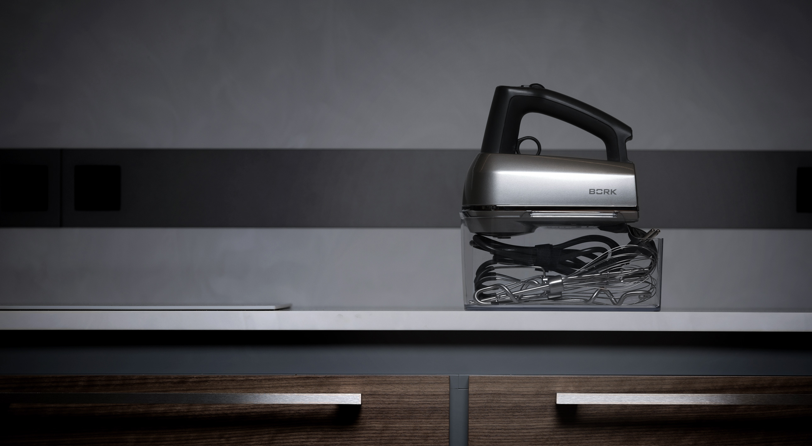Синхронный двигатель постоянного тока
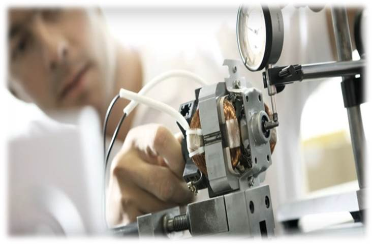- Эти двигатели характеризуются высокой надежностью, экономичностью и высокой производительностью. Как следствие, долгим сроком службы.
- Сбалансированный двигатель не имеет вибраций даже на самых высоких оборотах, в связи с чем, блендер и миксер легко удерживать в руке даже при продолжительной работе. Особо нужно отметить, что DC двигатели имеют компактные габариты и низкий уровень шума.
Функциональный и эргономичный

- Функциональный сбалансированный дизайн сделает даже продолжительную работу с ним легкой и приятной.
- Эргономичный и удобный ручной миксер E700 позволит замешивать самые разные продукты, используя три прилагающиеся насадки.
Ключевые особенности
- Комфортное использование.
- Уникальные насадки миксера.
- Быстрое и безопасное снятие насадок.
- LED-лампа.
- LCD-дисплей
- Анализатор типа насадок.
- Таймер.
- Форсированный режим.
- Пауза.
- Контейнер для хранения.
Комфортное использование
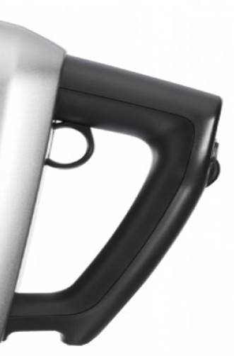 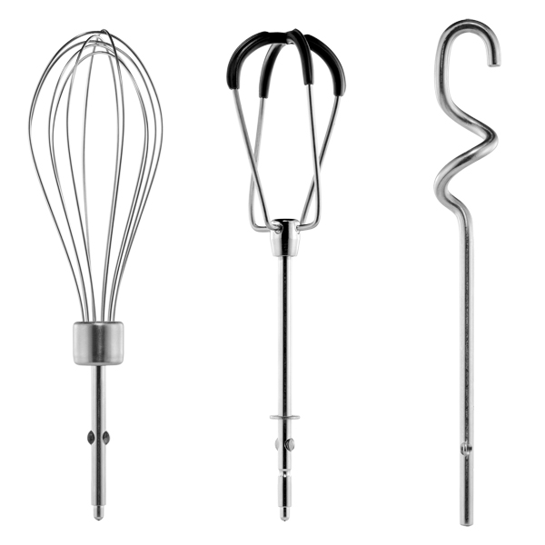- Эргономичная ручка облегчает продолжительное приготовление блюд.
- Поворотное крепление шнура питания не создает помех во время работы.
Уникальные насадки миксера
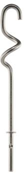 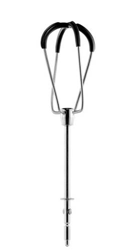 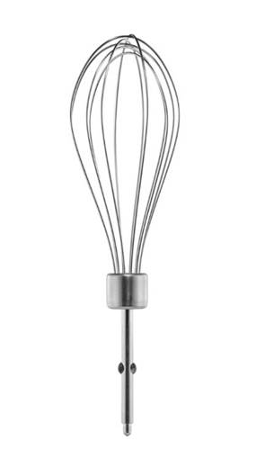- Насадки-тестомесы для приготовления плотного теста.
- Скребки-лопатки для жидкого теста, которые оптимально подходят для приготовления блинов и оладий.
- Венчики для взбивания легких продуктов.
Быстрое и безопасное снятие насадок
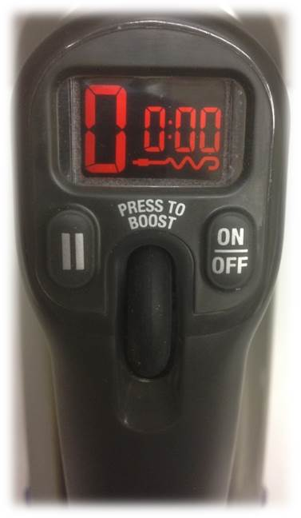Для быстрого и безопасного снятия насадок достаточно потянуть петлю затвора вверх.
LED-лампа
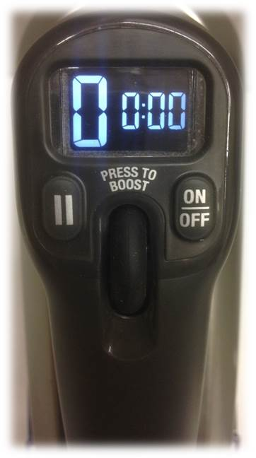- Во время работы миксера LED-лампа освещает ингредиенты внутри чаши и позволяет следить за ходом их перемешивания.
LCD-дисплей
- Наглядный LCD-дисплей отображает, вид выбранных насадок, 9 скоростей вращения, таймер, режим паузы без сброса таймера.
- Все это позволяет комфортно управлять процессом приготовления блюда.
Анализатор типа насадок
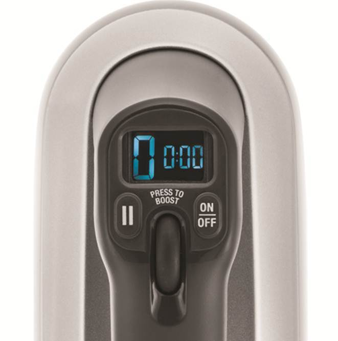- Миксер определяет тип установленной насадки и автоматически регулирует частоту вращения для получения оптимального результата.
- Частота вращения при выбранной скорости будет различной для определённого вида насадок для получения максимального крутящего момента.
Таймер
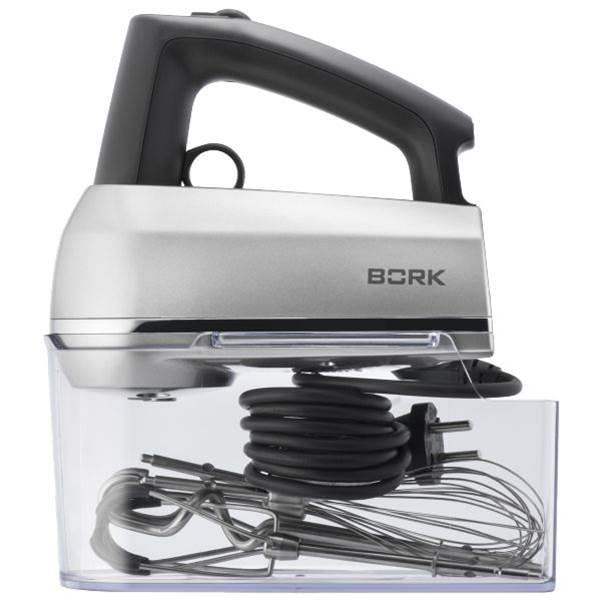- Таймер используется для точного управления приготовлением блюда
- Таймер отсчитывает время перемешивания до 14 минут 59 секунд. При использовании режима Пауза отсчет времени таймером приостанавливается.
Форсированный режим
- Данный режим позволяет одним нажатием перейти на максимальную 9-ю скорость вращения насадок.
- Нажмите и удерживайте регулятор скорости вращения.
Пауза
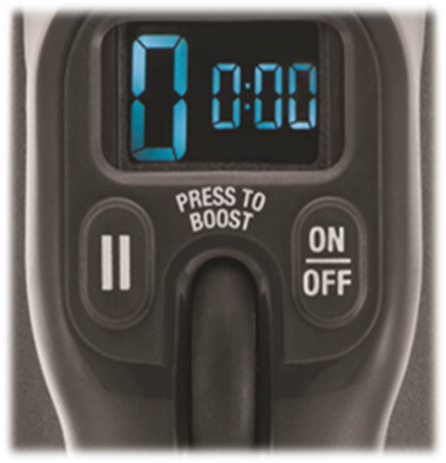- Нажатие этой кнопки приостанавливает вращение насадок и работу таймера на время приготовления или добавления ингредиентов. При этом показатели таймера сохраняются.
- Повторно нажмите кнопку для возобновления работы миксера.
Контейнер для хранения
- В контейнере можно хранить все насадки и шнур питания. Он закрывается сверху самим миксером.
- Благодаря боксу Вы экономите место для хранения и время на поиск насадок.
Комплектация
- Миксер
- Насадки-тестомесы
- Скребки-лопатки
- Венчики
- Контейнер для хранения насадок
Технические характеристики
Мощность 210-250 ВТ
Напряжение 220-240 В
Тип двигателя DC
Количество скоростей 9
Количество оборотов 1 скорость 210± 10%
Количество оборотов 9 скорость 1350± 5%
Вес нетто , в комплекте (кг) 1.35
Длина электрического кабеля 1.5 м
Страна изготовитель Китай